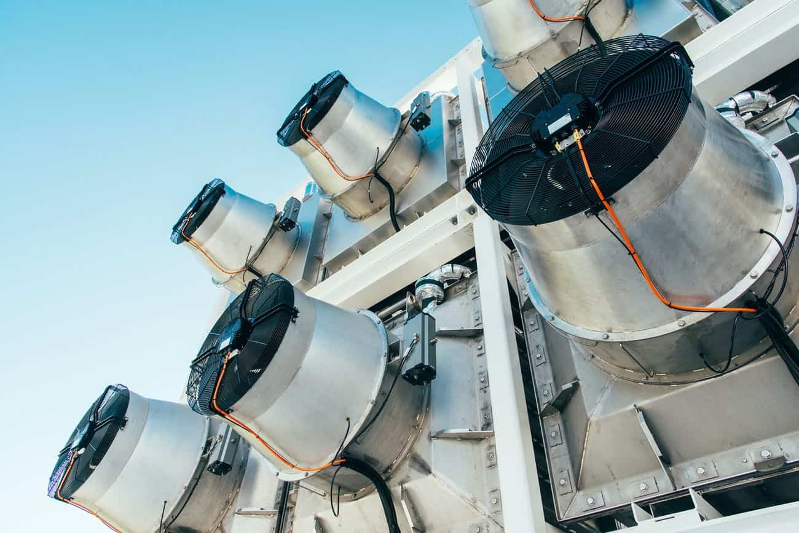

Leia Mais

Coletores de CO₂ da companhia Climeworks. Crédito: Climeworks/Divulgação
A DAC consiste em usar qualquer sistema mecânico para capturar dióxido de carbono da atmosfera. Usinas, por exemplo, utilizam solventes líquidos ou adsorventes sólidos para separar o CO₂ de outros gases, enquanto companhias como a suíça Climeworks e a canadense Carbon Engineering usam ventiladores gigantes para “coletar” o ar e filtros ou soluções químicas para fazer a separação dos gases.
O CO₂ removido é concentrado, purificado e comprimido. Posteriormente, o componente pode ser injetado no solo para auxiliar na extração de petróleo, diminuindo sua viscosidade. Este procedimento pode ajudar a compensar as emissões de gases que resultam da queima do petróleo.
De acordo com o The Economist, estima-se que a tecnologia de Captura Direta de Ar pode atingir um valor de mercado de US$ 100 bilhões por volta de 2030.
Obstáculos
Apesar desse potencial mercadológico, dinheiro é justamente o principal desafio para tornar o DAC realidade, já que outras formas de remoção de CO₂ não são tão caras.
Por sorte, a tecnologia tende a ficar mais barata com o passar do tempo, e o surgimento do mercado de carbono onde emissões negativas podem ser negociadas também contribui para sua viabilidade econômica.
O consumo energético também representa um problema para máquinas de Captura Direta de Ar. Equipamentos com a tecnologia podem chegar a usar um quarto da energia global em 2100. Para atenuar esse aspecto “negativo”, novos métodos de DAC que reduzem o consumo estão sendo desenvolvidos.
Leia Noticia Original - Clicando no link ou na imagem
REMOÇÃO DE CO2 ENTENDA A TEC...